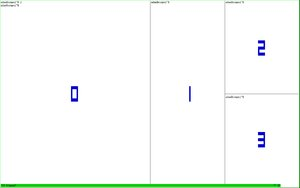
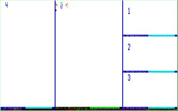

# Alt + space as an escape key in GNU Screen
# reset escape key to the default
escape ^Aa
# auxiliary register
register S ^A
# Alt + space produces ^A and acts as an escape key
bindkey "^[ " process S
# ^[ escape goes first whenever one presses Alt + key
# bind ^[ to activate a command class
bind "^[" eval "command -c class_escape" "echo \"command class: escape\""
# press Alt-? to show class_escape bindings
bind -c class_escape ? help -c class_escape
# press Alt-r to resource .screenrc
bind -c class_escape r source "$HOME/.screenrc"
# invert colors when escape key active
# %{+s} is activate when %E is true
hardstatus string %?%E%{+s}%?%w
hardstatus alwayslastline
|
Update: An improved version of this tool is now included in >> screen-session (a collection of utilities for GNU Screen). $ screen-session regions |
|  |
< tmux display-panes
screen-display-regions >
|
 |
$ git clone git://git.savannah.gnu.org/screen.git screen
$ cd screen/src; ./autogen.sh ; autoheader ; ./configure && make
$ sudo make install
Done!
bind n eval "screen sh -c 'sleep 0.01; screen-display-regions'" "other"
| goto frame: | [number] |
| goto frame: | ' [number] [ENTER] |
| swap frames: | s [number] |
| swap frames and goto: | s' [number] |
| rotate left: | l |
| rotate right: | r |
|
>> file screen-move-process - move a process between ttys |
|
$ screen-move-process PID
In the process parent shell type:
$ disown
$ tar xf screen-session-VERSION.tar.gz
$ cd screen-session-VERSION
$ sudo make install
$ cd screen-session-VERSION/screen-4.1.0
$ ./configure
$ make
$ sudo make install
Check whether the Screen version string matches with screen-session:
$ screen --version
Screen version 4.01.00scs_0.6.4 (screen-session project) 27-August-11
$ screen-session --version
screen-session 0.6.4 - a collection of tools for GNU Screen.
$ screen-session save save_file
list saved sessions:
$ screen-session ls
and restore ( inside another Screen session ):
$ screen-session load save_file
by default screen-session does not restore window numbers exactly. If you want the loaded session to reassemble closer the original, add --exact flag ( renumber all windows to make room for new ones ) or, to be even more precise, use --exact-kill flag ( which will kill all already existing windows ).
$ screen-session load --exact save_file
It would be very risky to let saved programs start immediately. Instead, every new window displays a prompt and waits for the confirmation.
$ screen-session load --exact --force-start 1-3,12 save_file
|
Update: An improved version of this tool is now included in screen-session (a collection of utilities for GNU Screen). $ screen-session new-window |
|
>> file screen-in-dir - starts Screen window in the same directory (this simple script is not perfect but still does its job) |
|
#start another screen window with the same working directory
bind C exec "$HOME/bin/screen-in-dir"
$ git clone git://git.savannah.gnu.org/screen.git screen $ cd screen
$ git-apply command-tty.diff $ cd src; ./autogen.sh && autoheader && ./configure && make $ sudo make install
|
>> file command-tty.diff - adds tty command which prints the filename of the current terminal ( bug 30563 ) |
|
# EscapeKey+r puts Screen into resize mode. Resize regions using hjkl keys, toggle focus with Tab and arrow keys.
bind r eval "command -c classresize" # enter resize mode
# use hjkl keys to resize regions
bind -c classresize h eval "resize -h -5" "command -c classresize"
bind -c classresize j eval "resize -v -5" "command -c classresize"
bind -c classresize k eval "resize -v +5" "command -c classresize"
bind -c classresize l eval "resize -h +5" "command -c classresize"
# quickly switch between regions using tab and arrows
bind -c classresize \t eval "focus" "command -c classresize" # Tab Key
bind -c classresize -k kl eval "focus left" "command -c classresize" # Arrow Left
bind -c classresize -k kr eval "focus right" "command -c classresize" # Arrow Right
bind -c classresize -k ku eval "focus up" "command -c classresize" # Arrow Up
bind -c classresize -k kd eval "focus down" "command -c classresize" # Arrow Down
{kind=link}
{kind=link}